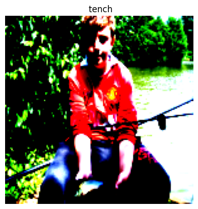
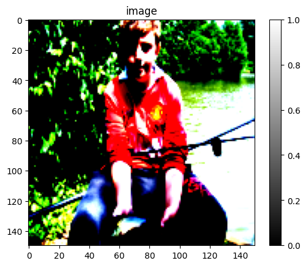
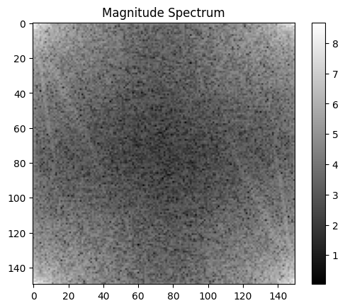
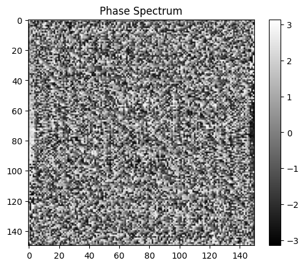
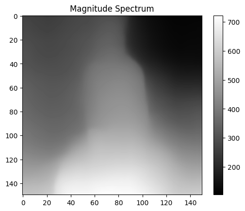

import torch
import torch.nn as nn
import torch.nn.functional as F
from torchvision import transforms, datasets, utils
import torchvision.transforms.functional as TF
from torch.utils.data import DataLoader
from datetime import datetime
from tqdm import tqdm
import matplotlib.pyplot as plt
import timm
import numpy as npImage Classification using ImageNette + depth
Image Classification using ImageNette + depth
Images
transform_default = transforms.Compose([
transforms.Resize((150, 150)),
transforms.ToTensor(),
transforms.Normalize(mean=[0.485, 0.456, 0.406], std=[0.229, 0.224, 0.225]), # Normalize with ImageNet mean and std
])# Download and load the Imagenette dataset
train_dataset = datasets.Imagenette(root='Data',
split='train',
# download=True,
transform=transform_default,
)
# Download and load the Imagenette dataset
test_dataset = datasets.Imagenette(root='Data',
split='val',
# download=True,
transform=transform_default,
)# Define a function to display images
def show_image(dataset):
# Access an image and its label from the dataset
image, label = dataset
# Convert the image tensor to a NumPy array
image_np = image[:3].numpy().transpose((1, 2, 0))
# Display the image using Matplotlib
plt.imshow(image_np.clip(0,1))
plt.axis('off')
plt.title(f' {train_dataset.classes[label][0]}')
plt.show()
# Define a function to display images
def show_images(images, labels, **kwargs):
nrows = int(np.ceil(np.sqrt(len(images))))
ncols = int(np.ceil(len(images)/nrows))
fig, axes = plt.subplots(nrows, ncols, figsize=(12, 12), **kwargs)
# Adjust the spacing between subplots
plt.subplots_adjust(wspace=0.3, hspace=0.3)
for ax, image, label in zip(axes.flat, images, labels):
# Convert image to numpy array and adjust pixel values
img_np = image[:3].numpy().transpose((1, 2, 0))
# Display image
ax.imshow(img_np.clip(0,1))
ax.axis('off')
ax.set_title(f' {train_dataset.classes[label][0]}')
for ax in axes.flat[len(images):]:
ax.axis('off')
plt.show()image, label = train_dataset[2]type(image)torch.Tensorshow_image(train_dataset[2])
Test Transform
import torch
import torchvision.transforms.functional as TF
class AddGrayscaleChannel(object):
def __init__(self):
super().__init__()
def __call__(self, img):
# Convert the image to grayscale
gray_img = TF.rgb_to_grayscale(img)
# Concatenate the grayscale image with the original image along the fourth dimension
img_with_gray_channel = torch.cat((img, gray_img), dim=0)
return img_with_gray_channel
def __repr__(self):
return self.__class__.__name__ + '()'FFT Transform
class ComputeFFT(object):
def __init__(self):
super().__init__()
def __call__(self, image):
# Convert the color image to grayscale
grayscale_image = TF.rgb_to_grayscale(image).squeeze()
# Convert the grayscale image to tensor and apply FFT
fft_result = torch.fft.fft2(grayscale_image)
# Compute magnitude spectrum
magnitude_spectrum = torch.log(torch.abs(fft_result) + 1)
# Compute phase spectrum
phase_spectrum = torch.angle(fft_result)
combined_image = torch.cat((image, magnitude_spectrum.unsqueeze(0), phase_spectrum.unsqueeze(0)), dim=0)
return combined_image
def __repr__(self):
return self.__class__.__name__ + '()'transform = ComputeFFT()
new_image = transform(image)
transposed_image = torch.transpose(new_image[:3], 0, 2).transpose(0, 1)
plt.imshow(transposed_image, cmap='gray')
plt.title('image')
plt.colorbar()
plt.show()
plt.imshow(new_image[3], cmap='gray')
plt.title('Magnitude Spectrum')
plt.colorbar()
plt.show()
# Visualize phase spectrum
plt.imshow(new_image[4], cmap='gray')
plt.title('Phase Spectrum')
plt.colorbar()
plt.show()Clipping input data to the valid range for imshow with RGB data ([0..1] for floats or [0..255] for integers).


#model_type = "DPT_Large" # MiDaS v3 - Large (highest accuracy, slowest inference speed)
#model_type = "DPT_Hybrid" # MiDaS v3 - Hybrid (medium accuracy, medium inference speed)
model_type = "MiDaS_small" # MiDaS v2.1 - Small (lowest accuracy, highest inference speed)
midas = torch.hub.load("intel-isl/MiDaS", model_type)
device = torch.device("cuda") if torch.cuda.is_available() else torch.device("cpu")
midas_transforms = torch.hub.load("intel-isl/MiDaS", "transforms")
if model_type == "DPT_Large" or model_type == "DPT_Hybrid":
transform = midas_transforms.dpt_transform
else:
transform = midas_transforms.small_transformUsing cache found in /home/ben/.cache/torch/hub/intel-isl_MiDaS_master
Using cache found in /home/ben/.cache/torch/hub/rwightman_gen-efficientnet-pytorch_master
Using cache found in /home/ben/.cache/torch/hub/intel-isl_MiDaS_masterLoading weights: Noneclass ComputeDepth(object):
def __init__(self, model, transform, device = "cuda"):
super().__init__()
self.device = device
self.model = model
self.model.to(self.device)
self.model.eval()
self.transform = transform
def __call__(self, image):
input_image = image.to('cpu').squeeze().numpy().transpose(1, 2, 0)
# input_image = np.array(image)
input_batch = transform(input_image).to(self.device)
with torch.no_grad():
prediction = self.model(input_batch)
prediction = torch.nn.functional.interpolate(
prediction.unsqueeze(1),
size=input_image.shape[:2],
mode="bicubic",
align_corners=False,
).squeeze(0)
prediction = prediction.to('cpu')
prediction_mean = torch.mean(prediction)
prediction_std = torch.std(prediction)
# Calculate the scaling factors for normalization
scale_factor = 0.225 / prediction_std
bias = 0.45 - prediction_mean * scale_factor
# Normalize the tensor to the desired mean and standard deviation
prediction = prediction * scale_factor + bias
combined_image = torch.cat((image, prediction), dim=0)
return combined_image
def __repr__(self):
return self.__class__.__name__ + '()'image, label = train_dataset[2]type(image)torch.Tensortransform_depth = ComputeDepth(midas, transform = transform, device = "cpu")
new_image = transform_depth(image)
transposed_image = torch.transpose(new_image[:3], 0, 2).transpose(0, 1)plt.imshow(transposed_image, cmap='gray')
plt.title('image')
plt.colorbar()
plt.show()
plt.imshow(new_image[3], cmap='gray')
plt.title('Magnitude Spectrum')
plt.colorbar()
plt.show()Clipping input data to the valid range for imshow with RGB data ([0..1] for floats or [0..255] for integers).